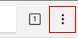
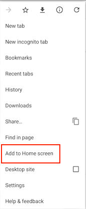

Go back
On iOS: Share -> Add to home screen (You need to be on Safari Browser)
On Android:
If you dismissed the "Add app to home screen" banner and want to add the app to your device, go back, click the 3 dots in your browser and click "Add to home screen"

